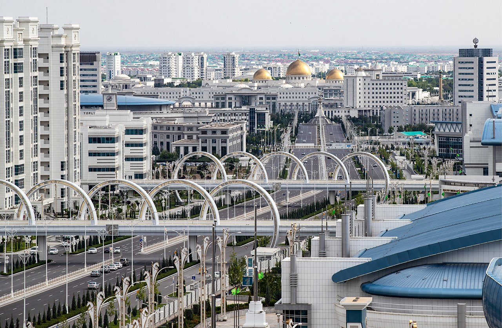
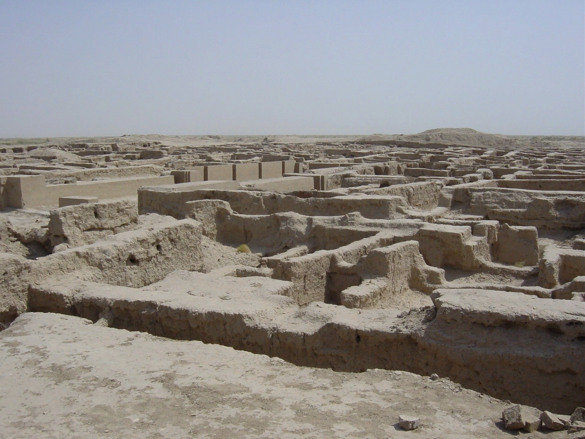
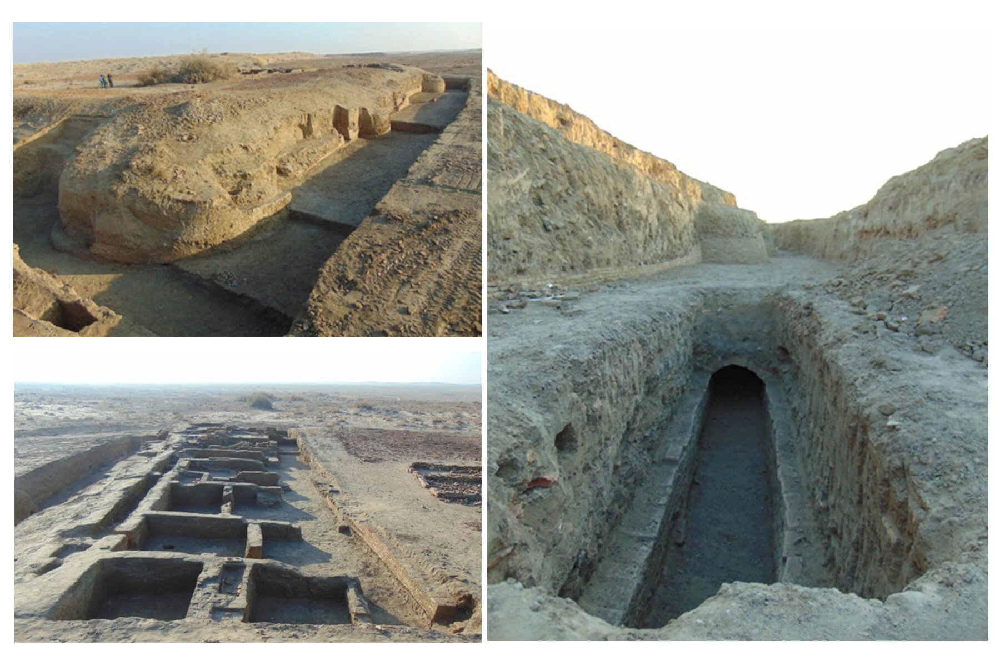
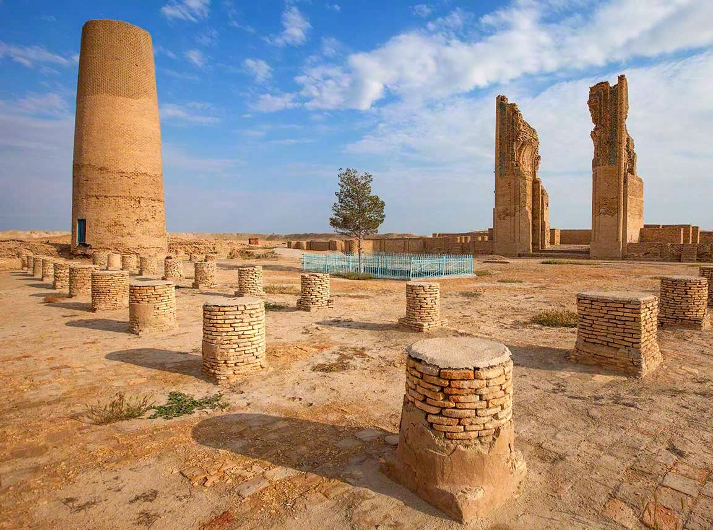
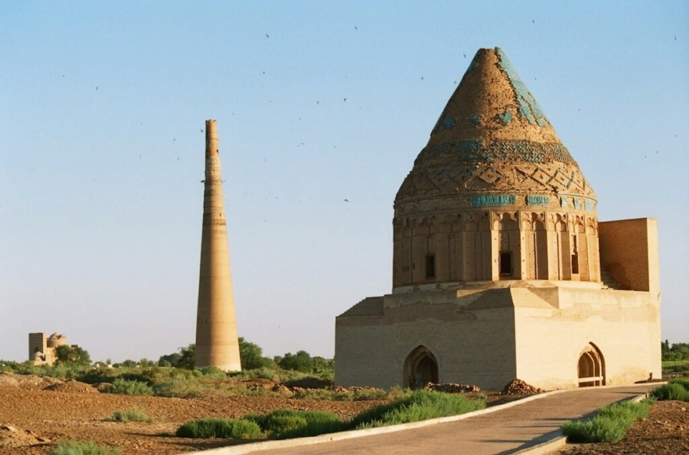
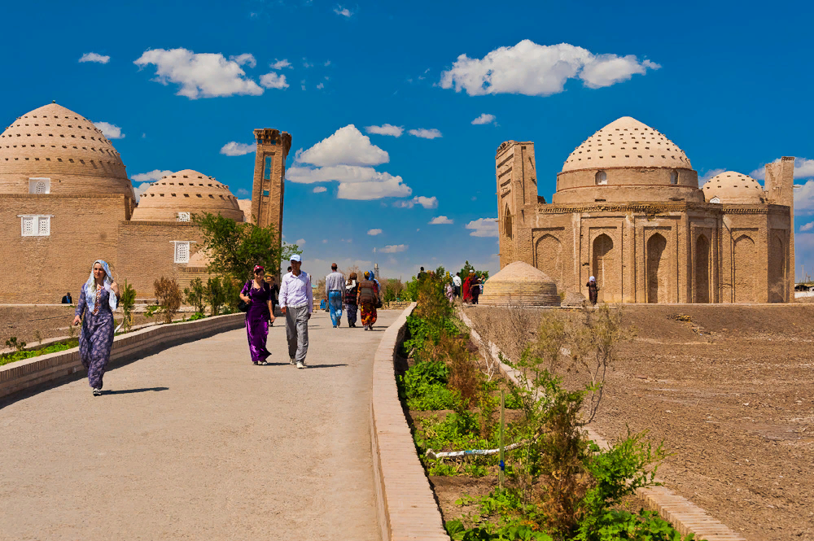
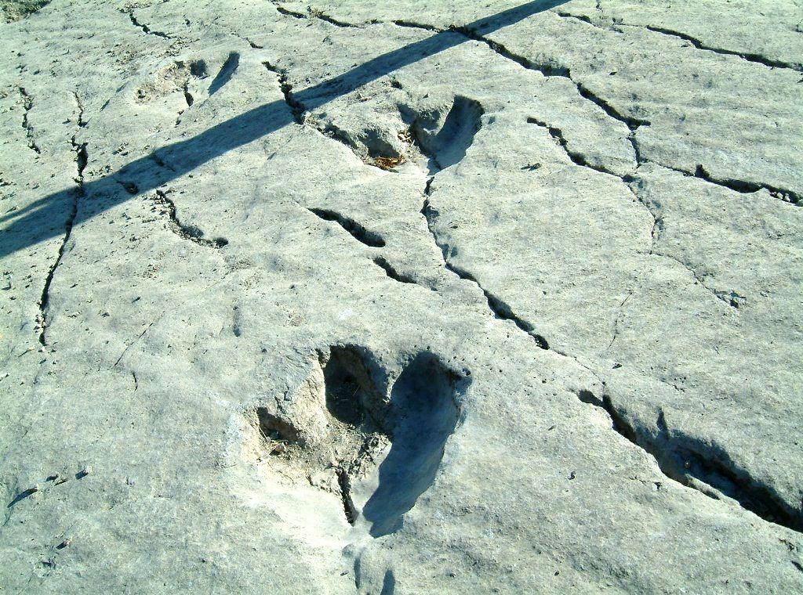
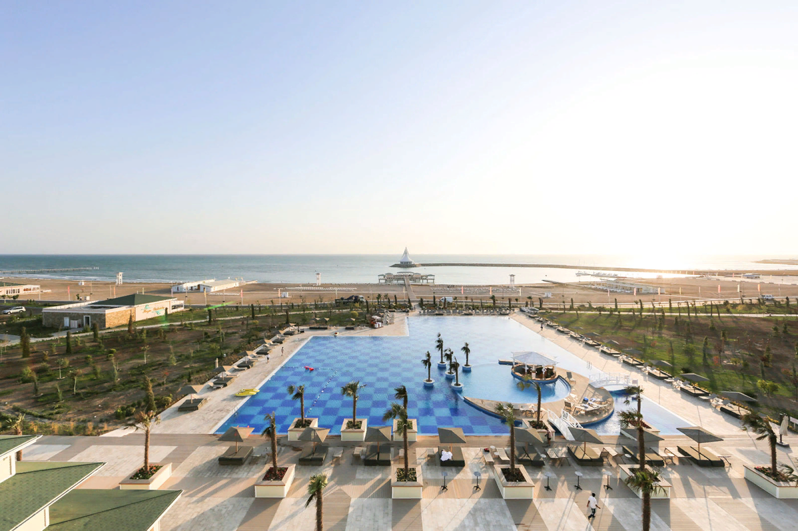
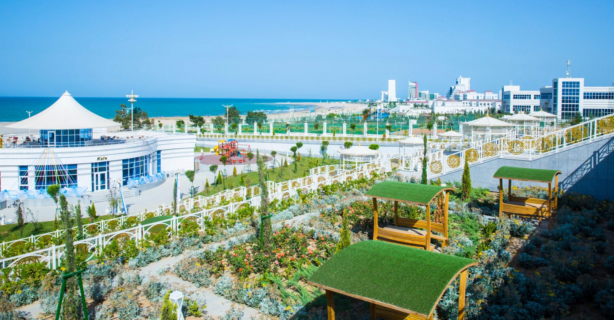
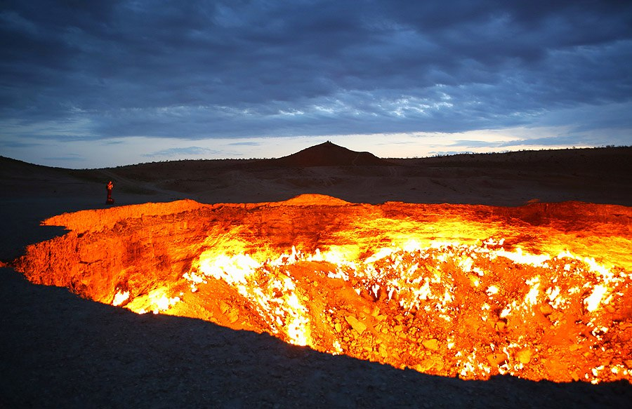

Turkmenistan
Turkmenistan with its beautiful nature, favourable seasonal climate, distinctive national values as well as alluring customs and traditions, various historic sites and beauty spots, moreover, its open-hearted and hospitable people - is one of the most ancient states and our country has enormous potential for growth in domestic tourism at international level and attracting international travellers in the prosperous epoch of powerful country. The country has all and every resources necessary to achieve the goal, namely extended territory, breath-freshening air, curative water streams, rich history and cultural heritage, natural beauties distinguished with their breath-taking appearance, and some virgin or impenetrable wild lands (like jungles by the Amudarya River). Even above mentioned destinations present certain reasons of visiting Turkmenistan for many travellers coming from the world's all corners.
Ashgabat has undergone a great transformation before our eyes. Most of the architectural edifices in Ashgabat make many people marvel at them. They include "Alem" Entertainment and Cultural Centre which is recognised as the tallest indoor Ferris wheel. The landmark building was registered in Guinness Book of World Records as well as the Turkmenistan, Television, radio Broadcasting Centre and Oguz Han fountain ensemble In addition entry of Ashgabat as world capital of white marble clad buildings in the Guinness book of World Records serve as clear evidence of extensive efforts to renovate architectural image of our capital. Nowadays, Ashgabat has become one of the attractive centre for world tourists and travellers.
Ahal
Ahal province holds an area of 97.200 square kilometres which accounts for 19.8% of the country's total area. Favourable weather conditions and fertile lands in Ahal province makes it well-suited for producing wide-range of agricultural products. The Garagum and the Tejen rivers serve as main sources of water for the province. There are also a multitude of mountain streams used for drinking water, irrigation, watering and other agricultural purposes. Wheat production, cotton and vegetable growing, viticulture and silk culture present leading agricultural activities in the region. Archaeological excavations conducted in the historic hills of the ancient city of Anev located within Ahal province proved white wheat crops five thousand years ago. Rafael Pampelli provides insight into the foresaid amazing explorations in his Archaeological Works in Turkestan - Il volume book published in Washington, USA in 1908. Furthermore, Ahal province is home of Ahalteke horses and world renowned Ahalteke carpets.
New Nusay is situated near Bagyr village, the city belongs to ancient and medieval periods.Shahryslam - Takyazyr medieval historic periods, is situated at the 20-22 kilometres north of Baharly district. Bagabat - Anev is situated on 12 kilometres south-eastern of Ashgabat, lies west of present Anev.Kufen - Chugundor belongs to medieval historic periods, lies 25 km north of Artyk railroad station.Abywerd belongs to medieval historic periods, located in the west of Kaka district centre.Old Kaka also belongs to prehistoric and medieval periods.Mehine belongs to medieval periods, is located in Kaka district on the road from Sarahs to Abywerd.Durun is a historic site of medieval history lies 22 kilometres west of Baharden district centre.
Balkan
Balkan province is located in the west part of Turkmenistan. The province has an area of 139,3 square kilometres. That accounts for 28.4% of the country's total area. This figure enables Balkan claim largest area in the country. Balkan province is administratively divided into 6 districts, 7 cities, 16 towns, 40 settlements, and 128 villages. Balkan province's geographical location, weather and natural conditions, vast underground minerals and other opportunities hold a significant importance in it’s economic growth. At the same time, Balkan is a centre of industrial complexes for extraction, refinery and finishing of mineral resources (primarily oil) and responsible to countrywide exports thereof. Since substantial part of the province's population dwell in urban areas, economic activities are notably represented by industrial manufacturing.
Dehistan (Misserian), Dehistan (Mashat), Rustemgala, Sortgala, Ahurgala Madaw, Ferawa (Paraw), Bazarly bowur, Dashrabat, Duyneshgala, Kurtushbaba, Talayhanata, Akyayla, Balkan-Bola-Balam one the ancient monuments of Dehistan. Balkan province is one of the most notable regions of Turkmenistan distinguished for its tourism potential. It is home to Ancient Dehistan state historic and cultural reserve that portrays the province's grandiose. The city of Mashad- Misserian lies in 9 kilometres north-western of present Etrek city. Misserian Oasis had been known as Dehistan in the medieval times. It flourished between IX and XIV centuries. One can see remains of mosques and minarets those witness onetime revival of those cities. Timeless quality and beauty of these monuments despite many millennia marvels each beholder over the mastery of the builders.
Mary
 Margiana, founded on our historic soils in III millennia B.C. and had been influential enough in the political, economic and cultural life of Central Asian region exerting its authority over the relations between East and West, North and South. Historical records show there had been a considerable demand by the people of Rome for the bunches of grapes cultivated Margiana. They also witness the troops of Alexander the Great confronted with impregnable fortresses of Margiana in the lV century.
Margiana, founded on our historic soils in III millennia B.C. and had been influential enough in the political, economic and cultural life of Central Asian region exerting its authority over the relations between East and West, North and South. Historical records show there had been a considerable demand by the people of Rome for the bunches of grapes cultivated Margiana. They also witness the troops of Alexander the Great confronted with impregnable fortresses of Margiana in the lV century.  Soltan Sanjar mausoleum - during tenure of Soltan Sanjar the capital of Merv city reached to the highest architectural heights. This monument was constructed in the XII century.
Today Margiana is reckoned among the earliest centres of ancient eastern civilisation, which alive roots, as researchers think, have been feeding the crown of original culture of the Turkmens till nowadays. Having passed the hearth of millennia this nation has remained and preserved itself and continues to multiply its generations. One thing is indisputable-in the oldest burials archaeologists find remains which anthropologically correspond to the appearance of the modern inhabitants of Turkmenistan.Big Gyzgala - was in the region of Merv which consired as a center of trade culture and science and has various beautiful architectural objects.
Soltan Sanjar mausoleum - during tenure of Soltan Sanjar the capital of Merv city reached to the highest architectural heights. This monument was constructed in the XII century.
Today Margiana is reckoned among the earliest centres of ancient eastern civilisation, which alive roots, as researchers think, have been feeding the crown of original culture of the Turkmens till nowadays. Having passed the hearth of millennia this nation has remained and preserved itself and continues to multiply its generations. One thing is indisputable-in the oldest burials archaeologists find remains which anthropologically correspond to the appearance of the modern inhabitants of Turkmenistan.Big Gyzgala - was in the region of Merv which consired as a center of trade culture and science and has various beautiful architectural objects. Dashoguz
Dashoguz province is situated on the left side of downstream of Amudarya river, bordered on the north and north-east by Republic of Uzbekistan, on the North by Ahal, on the north-west by Lebap and on the north-east by Balkan. The province with area is 73.4300 square kilometres accounting for 15.2% of the country's territory and 22% of population decisively flourishes in a rapid pace over the Independence years. Further betterment of living and Social conditions enables 2.4% development per annum in the province. According to the authorities, its population is represented by more than forty nationalities. Compared to other regions of our country, Dashoguz province has rather cold climate due to its location in the north.
 Monuments of Nejmeddin Kubra and Soltan Ali are located at the heart of ancient city. Mausoleums of inlaid glazes capture attention of travellers visiting these holy lands Koneurgench boasting a wealth of mausoleums including of patron saint Nejmeddin Kubra revives in the years of Independence. Monuments of Koneurgench which renowned not only in Central Asia but a so in the Islamic World has been enlisted by UNESCO in the World Heritage Sites.
Lebap
Lebap, south-eastern province of our country borders Uzbekistan on the north-east, Mary province on the south-west and Dashoguz on the north-west. The province covers 93.700 square kilometres territory. Population of the province account for 20% of the country's total population. More than half of them, exactly 56.6% dwell in rural areas. This region of our country also harbours great opportunities for the development of tourism in the future. Natural beauty spots, ancient monuments, state reserves, distinct natural characteristics of Koytendag lure and embrace globetrotters with its welcoming ambience. One can explore marvellous natural scenery with footprints of dinosaurs as well as other monuments of the sanctuaries. Ayrybaba, reaching heights of 3139 metres, is considered as the highest mountain peak of our country. Koytendag mountain reaches 85-110 kilometres in length and 25-30 kilometres in width. Fauna of the Koytendag mountain distinguishes with its richness and peculiarity. Unusual kinds of fishes with different body structure called 'blind fishes' are found in this region. Lebap is known by its as 10 types of fishes, including the blind fish which is recorded in the Red Book. Moreover, the region has 22 mammals, seven of them have been recorded in the Red Book Turkmenistan.
Avaza
The national tourist zone “Avaza" now is a favorite recreation place for many Turkmen citizens and visitors of our sunny country. Citizens of Turkmenistan enjoy visiting the Caspian Sea because it is comparable to a small journey that is full of daily life pictures of Turkmen towns and villages. Approaching the outskirts of the city of Turkmenbashi, one can already see a beautiful scene of the inviting and glittering turquoise shoreline of the ancient Hazar (former Caspian Sea). The sea view always arouses admiration with visitors, no matter how many times they saw this soul-caressing landscape. The progressive, dynamic development of the national tourist zone "Avaza“ and the tourism industry in our country as a whole, the great prospects for establishing mutually beneficial partnerships in the area, active attraction of foreign investors, are one of the important areas of the state policy of Turkmenistan.
 The variety of projects submitted to the Esteemed President of Turkmenistan are viewed as the next steps towards successful fulfillment of tasks on the further development of infrastructure of a new international center of tourism and recreation, which is being rapidly developed on the Caspian Sea coast. Attaching great importance to the well-balanced, comprehensive and yet creative approach to the development of "Avaza, the National Leader emphasizes that development plans of the national tourist zone expose engineers, architects, and designers to wider horizons for realization of the most challenging and innovative ideas, given that each facility being built in "Avaza" and the architectural ensemble of the seaside resorts as a whole, should organically fit in the natural scenic landscape of the Caspian Sea coast.
Darvaza
 SHINING OF THE GARAGUM Darvaza is one of the most suprising places in Turkmenistan. The huge crater in the midde of desert has a diameter of 60 meters and depth of 20 meters, attracting thousands of tourists over the years. Locals have nicknamed it the "Shining of the Garagum as anyone who sees it, can see why! Tongues of flame are thrown up from the sands of the Garagum desert, which have been happening for more than 40 years, some of them reaching 10-15 meters-in height! In 1971, near the Darvaza village, the Soiet geologists found a large congestion of natural gas under the desert sand. While drilling for a prospected chink, geologists stumbled upon a cavern of emptiness underneath the sand. All the sand around caved into the cavern, dragging into it all of the equipment and cars. Fortunately nobody was hurt. Through the emptiness natural gas began to emerge capable of harming all the people and animals in the surrounding area. Scientists deciced to set it on fire, to rid of the gas, assuring the fire will cease in a few days. Over 45 years have passed since the gas was set alight and femes stil burn to this day. Near to the Shining of the Garagum there are two more craters these do not burn but at the bottoms are bubbling. Liquids of light grey and turquoise. Tongues of flame are thrown up from the sands of the Garagum desert, which have been heppening for more than 40 years, some of the reaching 10-15 meters in height!